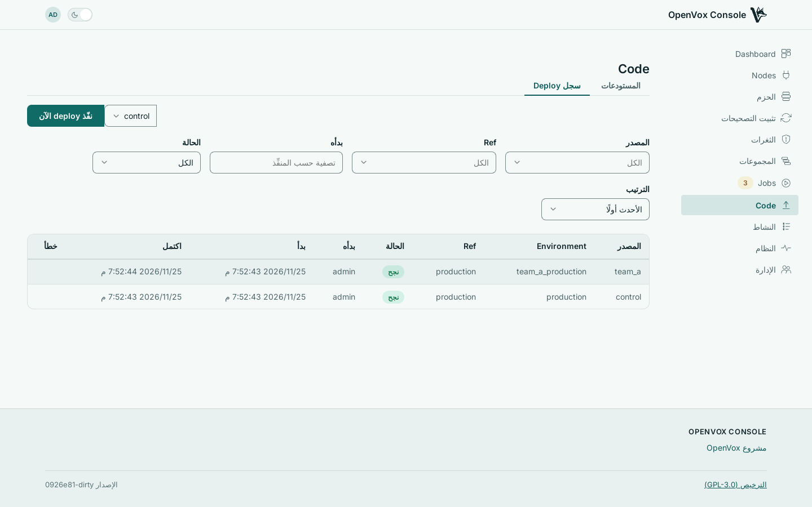

الاستخدام
deploy الكود
انشر كود Puppet من مستودع تحكم واحد أو أكثر إلى الـ Environments التي يُجمِّع منها openvoxserver.
تنفّذ وحدة التحكم deploy لكود Puppet من مستودعات التحكم - ملف Puppetfile والـ manifests في git - إلى مجلد الـ Environments الذي يقرؤه openvoxserver، باستخدام g10k. يصبح كل فرع من مستودع التحكم Environment واحدًا.
يتطلب عرض عمليات الـ deploy الإذن code:read؛ ويتطلب بدء إحداها code:deploy.
شغّل deploy الكود
يبقى deploy الكود معطَّلًا إلى أن تعرف وحدة التحكم مكان g10k، وما الذي يجري له deploy، وأين تضعه:
| الإعداد | ما هو |
|---|---|
CONSOLE_G10K_BIN_PATH |
برنامج g10k. تتضمنه صورة حاوية وحدة التحكم وتضبط هذا الإعداد بالفعل |
CONSOLE_CONTROL_REPO_URL |
مستودع تحكم واحد يجري منه الـ deploy |
CONSOLE_CODE_SOURCES_PATH |
أو، بدلًا من ذلك، ملف يصرّح بعدة مستودعات (انظر أدناه) |
CONSOLE_CODE_DIR_PATH |
المجلد الذي يقرأ منه openvoxserver الكود الخاص به؛ وتنفّذ وحدة التحكم deploy داخل المجلد environments الذي بداخله |
CONSOLE_CODE_WEBHOOK_SECRET |
السر الذي تُوقَّع به webhooks مضيف git |
لا يمكن ضبط CONSOLE_CONTROL_REPO_URL وCONSOLE_CODE_SOURCES_PATH معًا: إذ ترفض وحدة التحكم البدء بدل أن تجمع بينهما.
يجب أن تتشارك وحدة التحكم وopenvoxserver ذلك المجلد. مع التثبيت بالحزم على مضيف واحد، وجّه CONSOLE_CODE_DIR_PATH إلى /etc/puppetlabs/code واسمح لمستخدم وحدة التحكم بالكتابة في المجلد environments الذي بداخله.
مع منظومة الحاويات
لا يمرّر ملف compose الإنتاجي أيًّا من هذه الإعدادات إلى وحدة التحكم، ولا يمنحها وحدة تخزين الكود الخاصة بـ openvoxserver. أضف الاثنين في ملف compose.code.yml بجواره:
services:
console:
environment:
CONSOLE_CONTROL_REPO_URL: ${CONSOLE_CONTROL_REPO_URL:?set the control repository}
CONSOLE_CODE_DIR_PATH: /etc/puppetlabs/code
CONSOLE_CODE_WEBHOOK_SECRET_FILE: /run/secrets/code_webhook_secret
volumes:
- openvoxserver-code:/etc/puppetlabs/code
secrets:
- code_webhook_secret
secrets:
code_webhook_secret:
file: ./secrets/code_webhook_secret
ثم مرّره بعد الملف الرئيسي في كل أمر:
docker compose -f docker-compose.yml -f compose.code.yml up -d console
لم تُجرَّب هذه التركيبة بعدُ من البداية إلى النهاية كما جُرّبت أدلة التثبيت. إذا نجح الـ deploy لكن openvoxserver لا يرى الكود، فتحقّق من أن الحاويتين كلتيهما تُظهران الملفات نفسها تحت /etc/puppetlabs/code/environments.
deploy من عدة مستودعات تحكم
لتنفيذ deploy من أكثر من مستودع، صرّح بها في ملف YAML ووجّه CONSOLE_CODE_SOURCES_PATH إليه:
sources:
control:
remote: git@github.com:org/control-repo.git
prefix: false # branch production -> environment production
team_a:
remote: git@github.com:org/team-a-control.git
prefix: true # branch production -> environment team_a_production
private_key: /etc/openvox-console/keys/team_a
webhook_secret_file: /etc/openvox-console/team_a_webhook
- لا يجوز أن يحتوي اسم المصدر إلا على أحرف لاتينية صغيرة وأرقام و
_، لأنه يصبح جزءًا من أسماء الـ Environments. - يحدّد
prefixأسماء الـ Environments التي تنتجها فروع المصدر:trueيسبقها باسم المصدر، وfalseأو تركه دون ضبط يتركها مجرّدة، وأي سلسلة نصية تُستخدم كبادئة. ولا يجوز أن ينتهي مصدران إلى البادئة نفسها، لذا يمكن لمصدر واحد على الأكثر أن يكون بلا بادئة؛ وإلا ترفض وحدة التحكم البدء. - يمكن أن يكون لكل مصدر مفتاح deploy خاص به وسر webhook خاص به.
المصدر الجديد ذو البادئة ينجح في الـ deploy ولا يغيّر شيئًا، إلى أن تُصنَّف الـ Nodes في أسماء الـ Environments الجديدة الخاصة به. ولا شيء ينقل الـ Nodes إلى هناك نيابة عنك.
Deploy
افتح Code. يسرد تبويب المستودعات كل مستودع مع الـ Environments الخاصة به وآخر deploy له؛ ويؤدي Deploy على مستودع إلى deploy الفرع production الخاص به. ويفعل نفّذ deploy الآن في تبويب سجل Deploy الشيء نفسه للمستودع الافتراضي.
لا تتداخل عمليات deploy للـ Environment نفسه أبدًا، مهما كان عدد مثيلات وحدة التحكم العاملة. وتظهر كل عملية في سجل الـ deploy، مع من بدأها، وفي صفحة النشاط.


deploy مع كل push
لتنفيذ deploy كلما جرى push لفرع، أضف webhook إلى المستودع على مضيف git لديك:
- عنوان URL:
https://console.example.com/api/v1/code-deploys/webhook، أو، لمصدر واحد من بين عدة مصادر،https://console.example.com/api/v1/code-deploys/webhook/<source name> - نوع المحتوى: JSON
- السر: سر الـ webhook الخاص بذلك المصدر
- الأحداث: pushes
تتحقق وحدة التحكم من توقيع كل تسليم (الترويسة X-Hub-Signature-256) مقابل السر، وتنفّذ deploy للفرع الذي جرى له push.
اقرأ تبويب المستودعات
يعرض كل مستودع عددين للـ Nodes، والفارق بينهما هو الجزء المفيد:
- المُسنَدة: الـ Nodes التي يوجّهها التصنيف إلى أحد Environments المستودع.
- المُبلِّغة: الـ Nodes التي استخدم آخر تشغيل Puppet لها أحدها.
وجود Nodes مُسنَدة دون أي Node مُبلِّغ يعني كودًا جرى له deploy لكن لم يُشغّله أي Node بعد. ووجود Nodes مُبلِّغة دون أي Node مُسنَد يعني Nodes تشغّل كودًا لا توجّهها إليه أي مجموعة - وعادةً ما يكون ذلك Environment خلّفه مصدر أُزيل، أو Node ضُبط فيه environment داخل ملف puppet.conf الخاص به.
الحجم هو حجم الملفات التي جرى لها deploy، لا استخدام القرص: إذ يشارك g10k الوحدات بين الـ Environments، فتتداخل أحجام المستودعات.
إزالة مصدر من التهيئة توقف عمليات الـ deploy الخاصة به، لكنها تترك الـ Environments الخاصة به على القرص، حيث يواصل openvoxserver التجميع منها. احذفها بنفسك إن كان هذا ما قصدته.